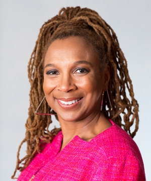

Spotlight of the Week - Kimberlé Crenshaw
Professor and Black Feminist

Crenshaw is a “professor of law at UCLA and Columbia Law School… [and] a leading authority in the area of Civil Rights, Black feminist legal theory, and race, racism and the law. Her work has been foundational in two fields of study that have come to be known by terms that she coined: Critical Race Theory and Intersectionality.” Crenshaw’s work has been published in a variety of reviews and journals. She also works to create workshops on gender equality and human rights across the world. “In 1996, she co-founded the African American Policy Forum to house a variety of projects designed to deliver research-based strategies to better advance social inclusion.” More recently, “Crenshaw was named the 2016 Fellows Outstanding Scholar by the American Bar Foundation. In 2015, Crenshaw was featured in the Ebony Power 100, a list honoring the contemporary heroes of the black community, and was #1 on Ms. Magazine’s list of Feminist Heroes of 2015.”
For futher information click on our reference here